Executive
Presentation
Presentación
Ejecutiva
Strategic evaluation of investment opportunities in AI EdTech, FoodTech QSR, Web3 & IoT and local AI hardware Evaluación estratégica de oportunidades en AI EdTech, FoodTech QSR, Web3 & IoT e IA local
Expert Multi-Agent Tutor Tutor Experto Multi-Agente
Autonomous enterprise-grade tutoring engine powered by 12 collaborative AI agents, knowledge graphs, 3 memory tiers, and verifiable learning proof. Motor de tutoría autónomo de nivel empresarial impulsado por 12 agentes de IA, grafos de conocimiento, 3 niveles de memoria y prueba verificable de aprendizaje.
The $300B Education Bottleneck: AI Chatbots FailEl Cuello de Botella Educativo: Los Chatbots Fallan
Current LLM solutions simply give direct answers rather than teaching students how to think.Las soluciones actuales de IA solo entregan respuestas directas sin enseñar a razonar.
The Socratic Multi-Agent ArchitectureLa Arquitectura Multi-Agente Socrática
A specialized 12-agent ecosystem that guides students through active discovery and inquiry.Un ecosistema de 12 agentes especializados que guía al estudiante mediante descubrimiento activo.
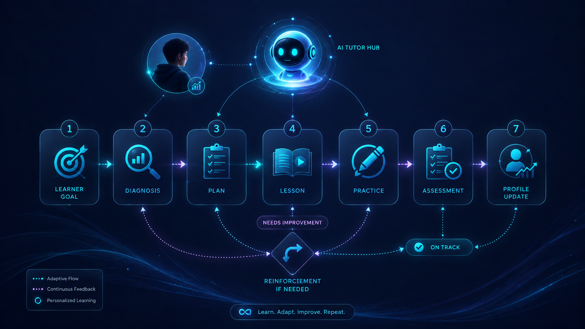
Direct Comparison: Generic AI vs. 3i Multi-AgentComparativa: IA Genérica vs. Sistema 3i Multi-Agente
Why foundational LLMs and simple wrappers cannot compete with an orchestrated agent architecture.Por qué los LLM genéricos no pueden competir con una arquitectura orquestada de agentes.
| Dimension / VectorDimensión / Vector | Traditional / AlternativeTradicional / Alternativa | 3i SolutionSolución 3i |
|---|---|---|
| Pedagogical MethodMétodo Pedagógico | ✕Spits immediate solutionsEntrega respuestas de golpe | ✓Scaffolded Socratic questioningGuía socrática progresiva |
| Factual AccuracyPrecisión y Rigor | ✕Prone to silent hallucinationsPropenso a alucinaciones | ✓Knowledge graph verified & auditedValidado contra grafos ontológicos |
| Student MemoryMemoria del Estudiante | ✕Lost on session resetSe borra en cada sesión | ✓3-Tier persistent cognitive memoryMemoria persistente en 3 capas |
| Mastery VerificationVerificación de Dominio | ✕Zero verification metricsSin métricas de dominio | ✓Cryptographic Proof of MasteryPrueba Criptográfica de Dominio |
The 4 Specialized Agent Governance SquadsLas 4 Escuadras de Gobernanza Multi-Agente
12 autonomous agents organized in 4 structured governance squads with strict cross-verification.12 agentes autónomos divididos en 4 escuadras con verificación cruzada rigurosa.
- Diagnostic AgentAgente de Diagnóstico
- Triage CoordinatorCoordinador de Triaje
- Curriculum NavigatorNavegador Curricular
- Socratic Dialogue CoachCoach Socrático
- Analogy GeneratorGenerador de Analogías
- Exercise SynthesizerSintetizador de Ejercicios
- Formal Logic CheckerVerificador Lógico
- Graph ValidatorValidador de Grafos
- Code & Math VerifierAuditor de Código y Mate
- Cognitive Memory IndexerIndexador de Memoria
- Proof-of-Mastery MintMinteador de Maestría
- Analytics ReporterGenerador de Reportes
3-Tier Memory Architecture: True PersonalizationArquitectura de Memoria en 3 Capas: Personalización Total
Our proprietary memory stack retains working, episodic, and semantic mastery data across years.Nuestra pila de memoria propietaria retiene datos de trabajo, episódicos y de dominio semántico por años.
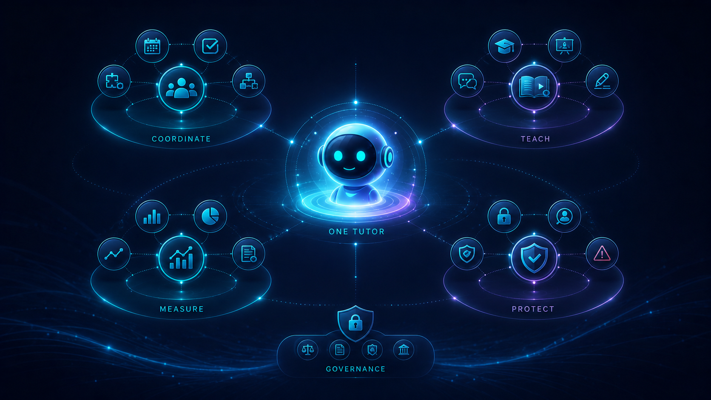
Ontological Knowledge Graph GroundingAnclaje Curricular en Grafos de Conocimiento
Curriculum concepts are represented as structured mathematical graphs with dependency trees.Los conceptos curriculares se representan como grafos estructurados con árboles de dependencias.
Proof-of-Mastery: Verifiable Learning CredentialsPrueba de Maestría: Credenciales de Aprendizaje Verificables
Replacing easily cheated online quizzes with cryptographic, auditable proofs of step-by-step reasoning.Sustituyendo los exámenes tradicionales por pruebas criptográficas auditables de razonamiento paso a paso.
- ✦ Every step of student reasoning and active problem resolution is logged and signedCada paso de deducción y resolución activa del estudiante queda registrado y firmado
- ✦ Evaluates cognitive problem-solving path rather than simple multiple-choice selectionEvalúa la ruta cognitiva de resolución en lugar de una simple opción múltiple
- ✦ Generates tamper-proof cryptographic skill credentials verifiable by universities and employersGenera credenciales de habilidad inmutables verificables por universidades y empresas
- ✦ Eliminates AI copy-pasting fraud through live multi-turn reasoning validationErradica el fraude de copiar y pegar respuestas de IA mediante validación interactiva
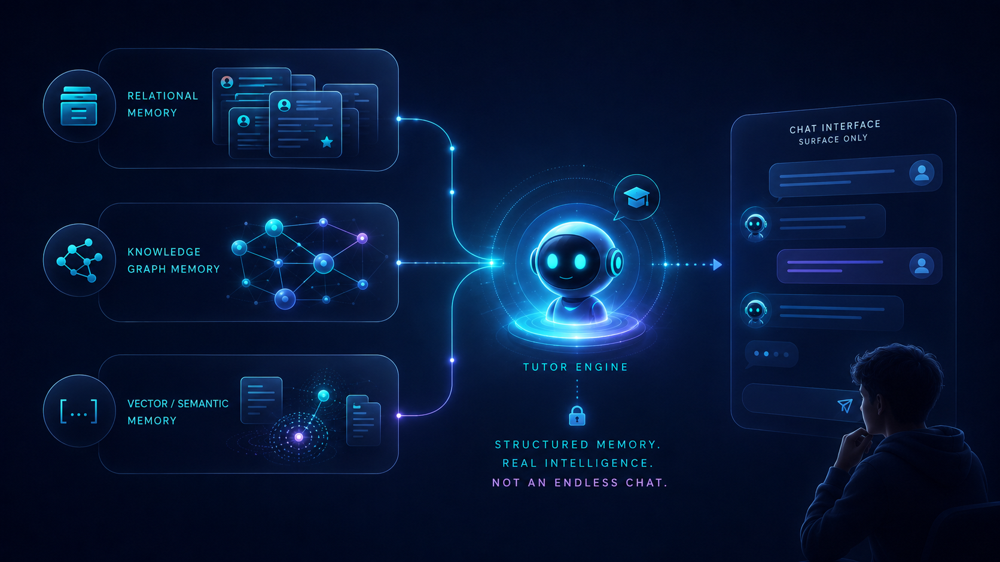
Enterprise DeepTech InfrastructureInfraestructura Tecnológica Empresarial
High-throughput, low-latency microservices built for millions of concurrent active tutoring sessions.Microservicios de alto rendimiento y baja latencia diseñados para millones de sesiones simultáneas.
$180B Market Opportunity across 3 TiersOportunidad de Mercado de $180B en 3 Niveles
Addressing high-margin segments: Higher Ed, K-12 STEM tutoring, and Enterprise Upskilling.Abordando segmentos de alto margen: Educación Superior, STEM K-12 y Reentrenamiento Corporativo.
Monetization: High-Margin Recurring RevenueMonetización: Ingresos Recurrentes de Alto Margen
Diversified revenue streams with 82% gross margins and high institutional retention.Flujos de ingresos diversificados con 82% de margen bruto y alta retención institucional.
Pilot Validation & Early Growth MetricsValidación Piloto y Métricas de Crecimiento
Validated with over 15,000 active students across 4 university STEM departments.Validado con más de 15,000 estudiantes activos en 4 facultades universitarias de STEM.
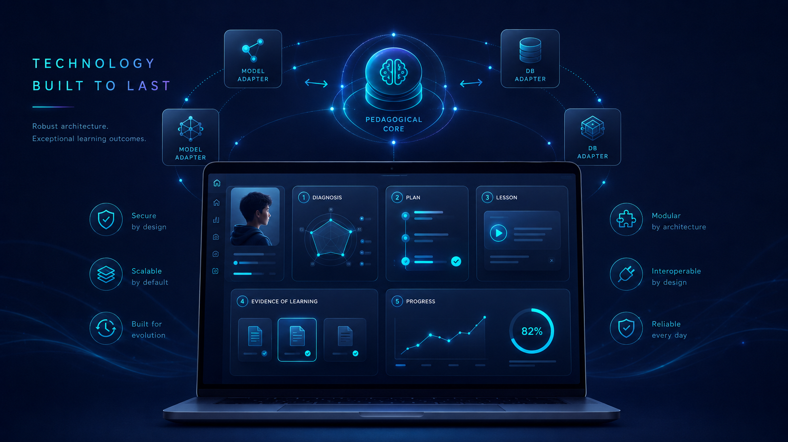
Strategic Roadmap: 18-Month HorizonHoja de Ruta Estratégica: Horizonte 18 Meses
Disciplined execution scaling from STEM beachhead to multi-disciplinary enterprise deployments.Ejecución disciplinada escalando desde STEM hacia despliegues corporativos multidisciplinarios.
- Expand to 50k active students in Calculus, Physics, and CSAlcanzar 50k estudiantes activos en Cálculo, Física y Computación
- Launch mobile app with real-time streaming voice modeLanzamiento de app móvil con modo de voz conversacional
- Canvas and Blackboard LMS native one-click integrationsIntegración nativa con LMS Canvas y Blackboard
- Ingest enterprise compliance and software engineering ontologiesIngesta de ontologías de ingeniería de software y banca
- Deploy on-premise dedicated LLM inference for banking clientsInferencia de LLMs locales dedicados para clientes corporativos
- Launch automated Proof-of-Mastery credential verificationDespliegue de credenciales verificables de dominio
- Full multilingual expansion across Spanish, English, and PortugueseExpansión total en Español, Inglés y Portugués
- Series A round of $8M to scale global university sales forceRonda Serie A de $8M para acelerar ventas institucionales globales
- SDK release for 3rd party educational content publishersLanzamiento de SDK para creadores de contenido educativo
Seed Investment Ask: $1.2M USDRonda Semilla de Inversión: $1.2M USD
Funding 18 months of runway to reach 100k active students and $2.4M ARR.Financiando 18 meses de operación para alcanzar 100k estudiantes y $2.4M USD de ARR.
“We are not building an AI that does your thinking for you. We are building the AI that empowers you to think deeper.” “No estamos construyendo una IA que piense por ti. Estamos creando la IA que te enseña a pensar más profundo.”
Smart Fast-Food Franchise Franquicia Fast-Food Inteligente
Pioneering the automated Smart QSR model in Cúcuta: Express pizza baked in 2.5 minutes, app-first pre-ordering, zero peak-hour queues, and sub-23% food cost. Pioneros en el modelo QSR inteligente en Cúcuta: Pizza express horneada en 2.5 minutos, app de pre-orden, cero filas en hora pico y costo de insumos < 23%.
The 3 Inefficiencies Killing Fast-Food MarginsLas 3 Ineficiencias que Destruyen los Márgenes
Traditional quick-serve restaurants suffer from slow prep times, lost sales in peak hours, and massive food waste.La comida rápida tradicional sufre por tiempos lentos, ventas perdidas en horas pico y desperdicio de insumos.
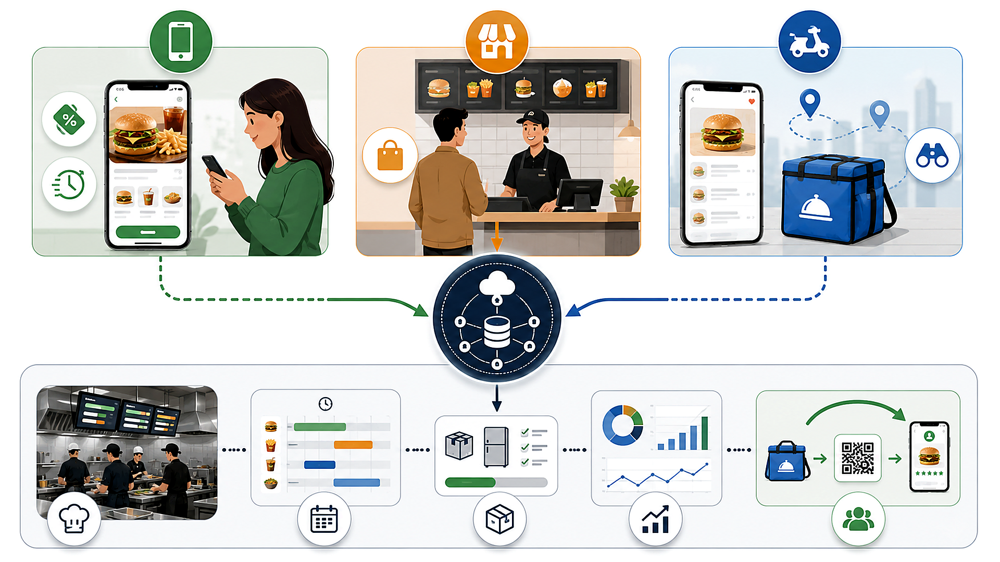
The Smart QSR Operating Engine (Cúcuta Pilot)El Modelo Operativo Smart QSR (Piloto Cúcuta)
Standardized industrial conveyor ovens combined with app-first pre-ordering to serve artisan pizza in 150 seconds.Hornos industriales de banda continua combinados con pre-orden por app para servir pizza artesanal en 150 segundos.
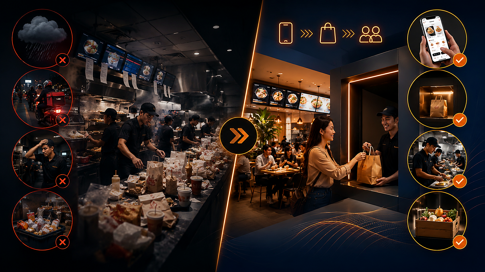
Direct Comparison: Traditional Pizzeria vs. Smart QSRComparativa Directa: Pizzería Tradicional vs. Smart QSR
Superior operational unit economics across speed, labor efficiency, food cost, and floor space.Economía unitaria superior en velocidad, eficiencia de personal, costo de insumos y espacio.
| Dimension / VectorDimensión / Vector | Traditional / AlternativeTradicional / Alternativa | 3i SolutionSolución 3i |
|---|---|---|
| Baking & Prep TimeTiempo de Horneado | ✕12–18 minutes12 a 18 minutos | ✓2.5 minutes continuous2.5 minutos continuos |
| Kitchen Staff per ShiftPersonal por Turno | ✕5–7 workers5 a 7 empleados | ✓2 operators2 operadores |
| Food Cost % (COGS)Costo de Insumos (COGS) | ✕32% – 38%32% a 38% | ✓21.8% (Target < 23%)21.8% (Meta < 23%) |
| Peak Hourly CapacityCapacidad Pico / Hora | ✕35–45 pizzas35 a 45 pizzas | ✓120+ pizzas / hour120+ pizzas / hora |
Why Cúcuta as our Pilot Beachhead?¿Por qué Cúcuta como Ciudad Piloto?
High urban population density, vibrant commercial corridors, low initial OPEX, and unserved demand for fast quality food.Alta densidad urbana, corredores comerciales activos, bajo costo inicial y demanda insatisfecha por comida rápida de calidad.
Automated High-Throughput EquipmentEquipamiento Automatizado de Alto Rendimiento
Industrial-grade hardware designed for maximum reliability, low energy consumption, and high speed.Maquinaria industrial diseñada para máxima fiabilidad, bajo consumo eléctrico y alta velocidad.
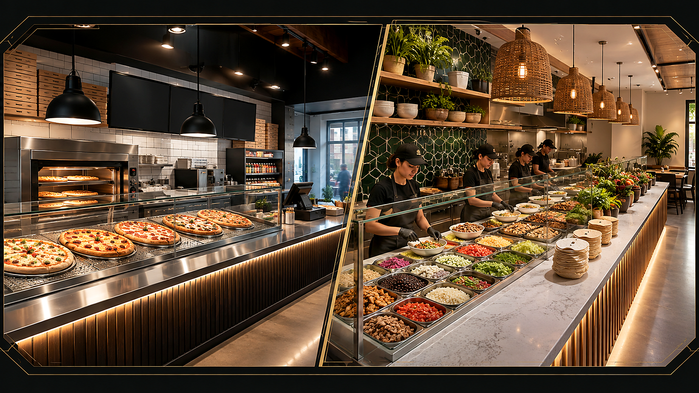
App-First Ordering & Dynamic AI PricingApp de Pre-Orden y Precios Dinámicos con IA
A proprietary customer app that predicts order arrival times and balances kitchen demand with dynamic promotions.Una app propietaria que predice la hora de llegada del cliente y equilibra la demanda con promociones dinámicas.
- ✦ Customer orders and pays in 3 taps on mobile; geolocation alerts kitchen when customer is 3 minutes awayEl cliente pide y paga en 3 toques; la geolocalización avisa a cocina cuando el cliente está a 3 minutos
- ✦ Zero queueing: pizza comes straight out of the oven into the customer's hands or heated lockerCero filas: la pizza sale del horno directo a las manos del cliente o a su locker térmico
- ✦ Dynamic AI pricing offers off-peak discounts (2:00 PM – 5:00 PM) to maximize oven utilization all dayPrecios dinámicos con IA ofrecen descuentos en horas valle (2:00 PM a 5:00 PM) para mantener hornos llenos
- ✦ Gamified loyalty program with personalized combo recommendations based on ordering habitsPrograma de lealtad gamificado con combos personalizados según el historial de compra
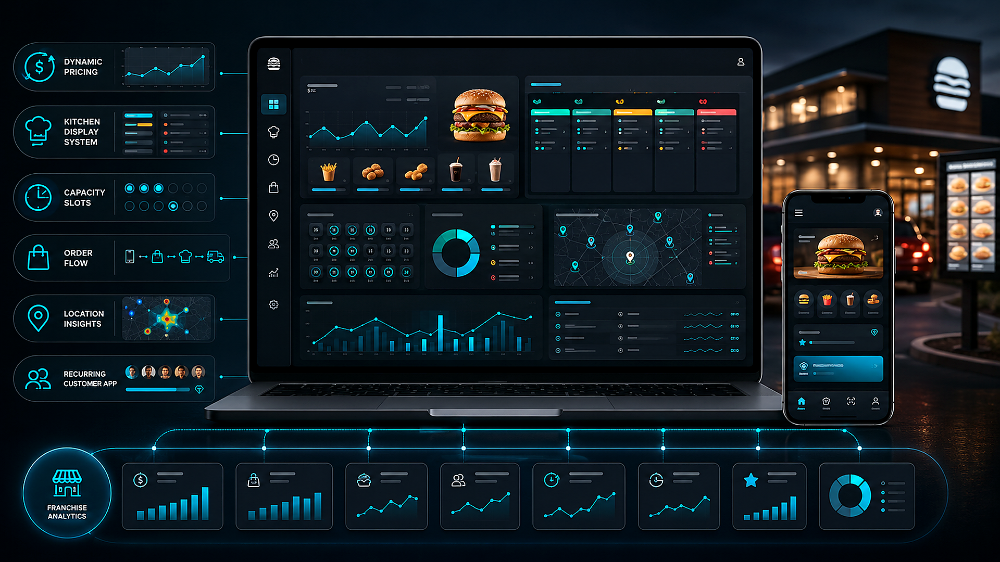
Optimized Menu: High Margin, Fast PrepMenú Optimizado: Alto Margen y Rápida Preparación
Curated 8-item menu maximizing ingredient overlap to achieve 21.8% food cost and zero food waste.Menú curado de 8 referencias maximizando insumos compartidos para lograr 21.8% de costo y cero desperdicio.
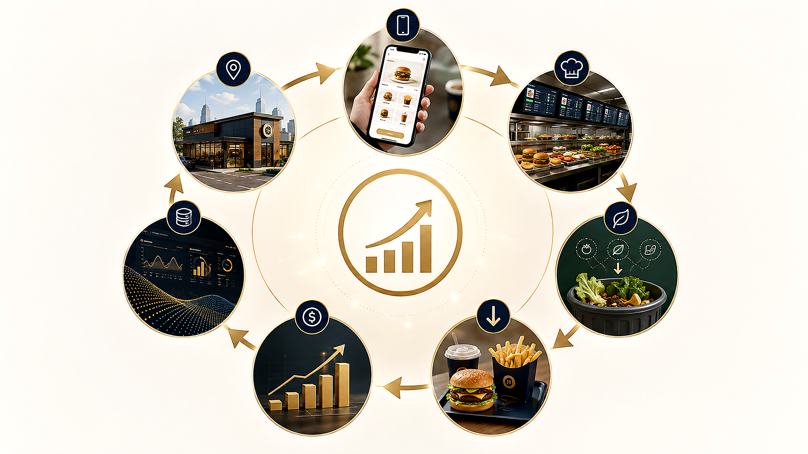
Store Unit Economics (Cúcuta Pilot Model)Economía Unitaria por Local (Modelo Piloto Cúcuta)
Robust financial model delivering 34% net EBITDA margin with a 9-month capital payback period.Modelo financiero sólido que entrega 34% de margen EBITDA neto con retorno de inversión en 9 meses.
Initial Pilot Store CAPEX Breakdown ($68,000 USD)Desglose de CAPEX del Local Piloto ($68,000 USD)
Detailed capital allocation to build, equip, and launch the flagship Smart QSR store in Cúcuta.Asignación detallada de capital para construir, equipar y lanzar el local insignia en Cúcuta.
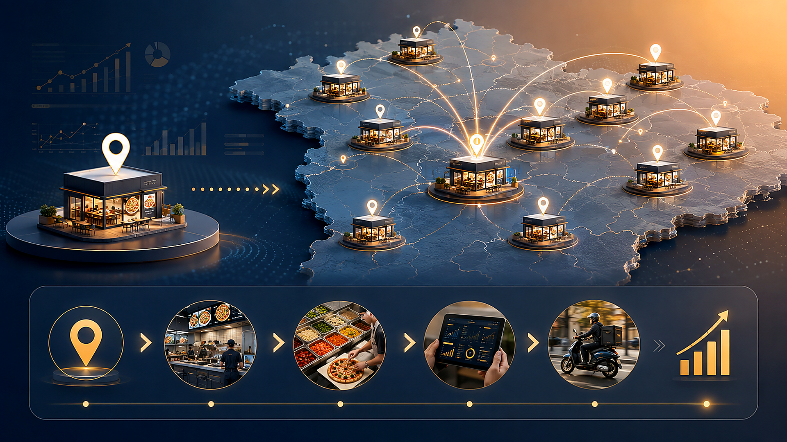
The Turnkey Franchise Expansion ModelEl Modelo de Expansión de Franquicias Llave en Mano
Standardized store modules allow rapid plug-and-play replication for local and regional franchisee investors.Módulos estandarizados permiten replicar locales llave en mano para inversionistas franquiciados.
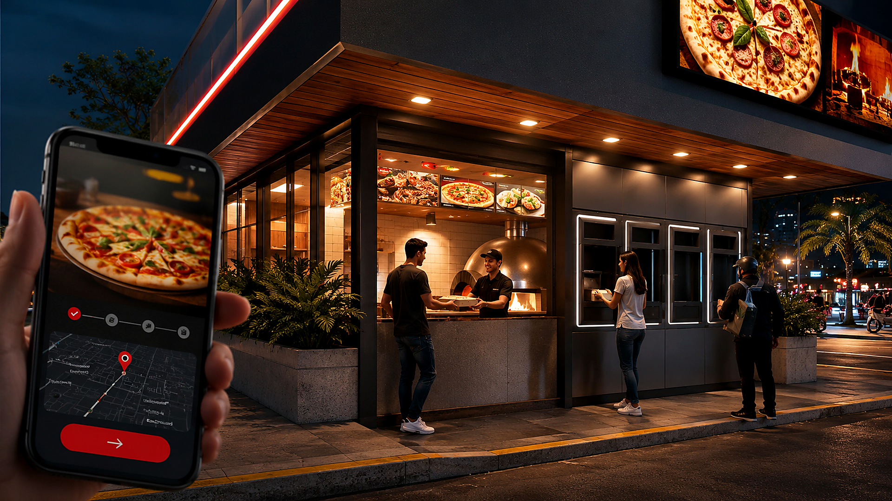
Regional Rollout: From 1 Pilot to 20 Franchise StoresDespliegue Regional: De 1 Piloto a 20 Locales Franquiciados
Disciplined multi-city expansion across Eastern and Central Colombia.Expansión disciplinada multiciudad por el oriente y centro de Colombia.
- Launch flagship store in Caobos, CúcutaApertura del local insignia en Caobos, Cúcuta
- Achieve 300 pizzas/day and 21.8% food cost targetsAlcanzar 300 pizzas/día y meta de costo de insumos del 21.8%
- Onboard 8,000 app users and 45% pre-order rateCaptar 8,000 usuarios en app con 45% de órdenes por pre-pedido
- Open Store #2 in Ventura Plaza and Store #3 in Los PatiosApertura de Sede #2 en Ventura Plaza y Sede #3 en Los Patios
- Expand to Bucaramanga with 2 flagship storesExpansión a Bucaramanga con 2 locales insignia
- Establish centralized dough commissary facilityMontaje de centro de producción de masas centralizado
- Franchise rollout into Medellín, Pereira, and BogotáAperturas en Medellín, Pereira y Bogotá
- Achieve $8.6M USD in network-wide annual GMVAlcanzar $8.6M USD en ventas anuales de la red
- Integrate Arcana signed IoT auditability for remote investorsIntegración con IoT firmado de Arcana para inversores remotos
Operational Risk Engineering & Fail-SafesGestión de Riesgos Operativos y Resiliencia
Systematic protocols to handle power outages, supplier shortages, and peak traffic surges.Protocolos sistemáticos para caídas eléctricas, desabastecimiento y picos masivos de demanda.
Pilot Capital Round: $120,000 USDRonda de Capital Piloto: $120,000 USD
Funding the launch of the flagship Cúcuta store, mobile app finalization, and commissary setup.Financiando la apertura del local insignia en Cúcuta, app móvil y centro de producción.
“We are not just selling artisan pizza. We are building the high-speed operating system for the next generation of food franchises.” “No solo vendemos pizza artesanal. Estamos creando el sistema operativo de alta velocidad para la próxima generación de franquicias de comida.”
Arcana: Trust by Construction Arcana: Contabilidad Inalterable
Accounting that cannot be lied about. A trust network for franchises and remote investors: Signed IoT inside the store, auditable daily close on Polygon, and automated USDC dividend settlement. Contabilidad imposible de falsear. Una red de confianza para franquicias e inversionistas remotos: IoT firmado dentro del local, cierre diario en Polygon y liquidación automática en USDC.
The Disconnect: The Investor Does Not See the StoreLa Desconexión: El Inversor No Ve el Local
“The investor does not see the store. The store manager does.” Information asymmetry fuels fraud and limits capital expansion.“El inversionista no ve el local. El administrador sí.” La asimetría de información genera fraude y frena la inversión.
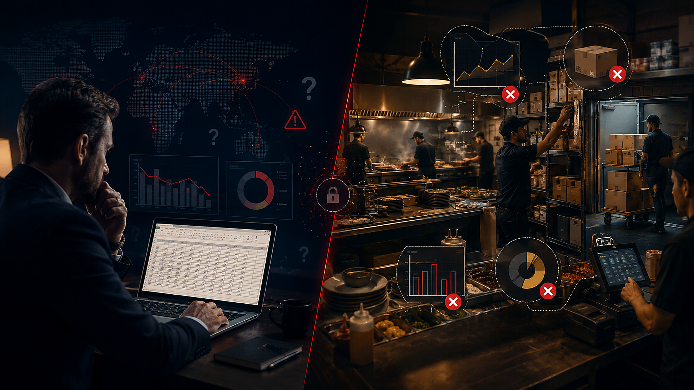
Turning Stores into Accounting Books Signed by MachinesLocales Convertidos en Libros Contables Firmados por Máquinas
Arcana turns each physical commercial store into an unforgeable ledger verified by independent hardware devices.Arcana convierte cada local comercial en un libro contable inalterable verificado por hardware independiente.
What Arcana Is — And What It Is NotQué Es Arcana — Y Qué No Es
Enterprise financial infrastructure for real physical assets, strictly decoupled from crypto speculation.Infraestructura financiera empresarial para activos reales, totalmente desvinculada de la especulación cripto.
| Dimension / VectorDimensión / Vector | Traditional / AlternativeTradicional / Alternativa | 3i SolutionSolución 3i |
|---|---|---|
| Core InfrastructureInfraestructura Central | ✕IS NOT: A speculative volatile cryptocurrencyNO ES: Una criptomoneda volátil o memecoin | ✓IS: Tamper-proof store accounting ledgerSÍ ES: Libro contable inalterable de local |
| Hardware RoleRol del Hardware | ✕IS NOT: A replacement for cashier POS softwareNO ES: Un reemplazo del software de caja POS | ✓IS: Independent physical validation meshSÍ ES: Malla de validación física independiente |
| Settlement TokenToken de Liquidación | ✕IS NOT: A token traded on open exchangesNO ES: Un token transado en exchanges | ✓IS: 1:1 USDC-backed internal clearing unitSÍ ES: Unidad respaldada 1:1 por USDC |
| Dividend RulesReglas de Dividendos | ✕IS NOT: Manual subjective manager transfersNO ES: Giros manuales a discreción humana | ✓IS: Deterministic smart contract payoutsSÍ ES: Pagos deterministas por contrato |
Signed IoT Inside the Store: Hardware-Level TruthIoT Firmado en el Local: Verdad a Nivel de Hardware
Industrial sensor nodes equipped with cryptographic secure elements continuously monitor physical actions.Nodos industriales con chips criptográficos seguros monitorean continuamente las acciones físicas del local.
Multi-Vector Fraud Detection & Evidence CorrelationDetección de Fraude Multi-Vector y Correlación
Manipulating a single sensor is useless: multiple independent physical vectors must corroborate in real time.Alterar un sensor no sirve de nada: múltiples vectores físicos independientes deben coincidir en tiempo real.
| Dimension / VectorDimensión / Vector | Traditional / AlternativeTradicional / Alternativa | 3i SolutionSolución 3i |
|---|---|---|
| 1. Ingredient Weight1. Peso de Insumos | ✕20kg flour + 10kg cheese consumed20kg harina + 10kg queso consumidos | ✓Yields exactly 85 standard pizzasRinde exactamente 85 pizzas estándar |
| 2. Oven Electrical Cycles2. Ciclos del Horno | ✕2.4 kWh active baking draw2.4 kWh de calentamiento activo | ✓Corroborates 85 continuous bake cyclesCorrobora 85 horneados continuos |
| 3. Packaging Dispensers3. Dispensador de Cajas | ✕85 boxes pulled from dispenser85 cajas retiradas del dispensador | ✓Optical sensor confirms 85 unitsSensor óptico confirma 85 unidades |
| 4. POS Financial Register4. Caja Registradora | ✕85 orders paid and registered85 órdenes cobradas y registradas | ✓Zero discrepancy detectedCero discrepancias detectadas |
The Immutable Daily Close Protocol on PolygonEl Cierre Diario Inalterable en Polygon
Every midnight, the day's operational telemetry is validated, compressed into a Merkle tree, and notarized on Polygon.Cada medianoche, la telemetría se valida, se resume en un árbol de Merkle y se notariza en Polygon.
- ✦ Thousands of sensor readings hashed into a single 32-byte cryptographic Merkle rootMiles de lecturas de sensores se comprimen en una única raíz de Merkle de 32 bytes
- ✦ Notarization on Polygon blockchain takes 2 seconds and costs less than $0.02 USD per storeLa notarización en Polygon toma 2 segundos y cuesta menos de $0.02 USD por local
- ✦ Creates a permanent mathematical audit trail that neither store manager nor franchise can alterGenera un historial contable permanente que ni el administrador ni la franquicia pueden modificar
- ✦ One-click verification on Polygonscan proves reported financial results match hardware telemetryVerificación pública en Polygonscan con un clic demostrando que los ingresos coinciden con el hardware
USDC Settlement & Smart Contract Split RulesLiquidación en USDC y Reparto Automatizado por Contrato
Autonomous programs enforce profit distribution agreements without human delays or banking friction.Programas autónomos ejecutan el reparto de dividendos pactado sin demoras humanas ni trabas bancarias.
The Investor Dashboard: Live Telemetry & Daily PayoutsEl Portal del Inversionista: Telemetría y Pagos en Vivo
Remote investors monitor actual unit economics and machinery health with complete transparency.Los inversionistas remotos monitorean la economía real y la maquinaria con transparencia total.
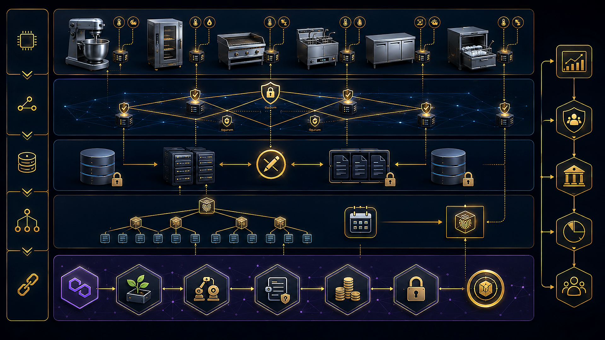
Monetization: Recurring SaaS + Settlement Take-RateMonetización: SaaS Recurrente + Comisión de Liquidación
Three recurring revenue streams tied to store hardware deployments, software monitoring, and gross sales volume.Tres flujos recurrentes de ingresos: hardware instalado, software de monitoreo y volumen de liquidación.
The $800B Global Franchise Market OpportunityOportunidad de Mercado Global de Franquicias ($800B)
Targeting high-volume QSR, cloud kitchens, and automated retail networks seeking remote capital.Enfocado en cadenas de comida rápida QSR, dark kitchens y retail automatizado que buscan capital remoto.
First Flagship Integration: Smart Fast-Food PilotPrimera Integración Insignia: Piloto Smart Fast-Food
Deploying Arcana in our flagship Smart Fast-Food pilot store in Cúcuta as the living proof of concept.Desplegando Arcana en el local insignia de comida rápida inteligente en Cúcuta como caso de éxito real.
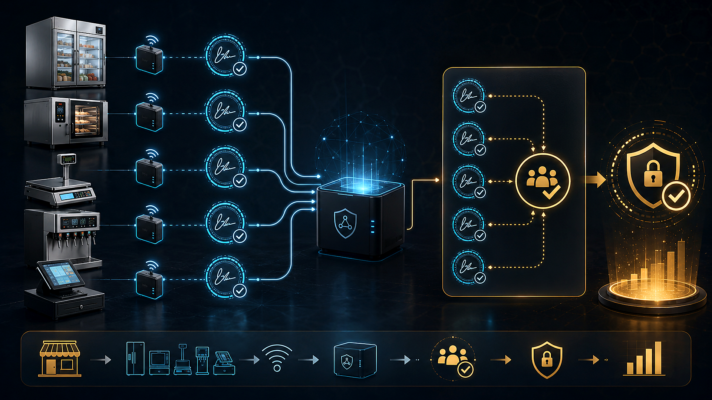
Strategic Roadmap: From Pilot to 100 StoresHoja de Ruta: Del Piloto a 100 Locales Conectados
Disciplined hardware manufacturing and smart contract scaling roadmap.Plan de escalamiento disciplinado en fabricación de hardware y contratos inteligentes.
- Deploy sensor kits in 5 flagship pizza and quick-serve locationsInstalar kits de sensores en 5 locales insignia de comida rápida
- Validate daily Polygon notary seals and Merkle correlation accuracyValidar cierres diarios en Polygon y precisión del árbol de Merkle
- Achieve 99.8% sensor uptime with zero false fraud positivesAlcanzar 99.8% de disponibilidad de sensores con cero falsos positivos
- Launch remote investor portal with automated daily USDC dividendsLanzar portal para inversores con dividendos diarios automáticos en USDC
- Integrate major POS vendors and industrial equipment manufacturersIntegrar principales proveedores de POS y fabricantes de maquinaria
- Onboard 3 regional franchise chains across Colombia and MexicoSumar 3 cadenas de franquicias regionales en Colombia y México
- Decentralize sensor oracle validator networkDescentralizar red de oráculos validadores de hardware
- Enterprise API integration for hospitality and cloud kitchen brandsAPI corporativa para marcas de hotelería y dark kitchens
- Series A expansion into North American franchise networksExpansión Serie A hacia redes de franquicias en Norteamérica
Seed Investment Ask: $750,000 USDRonda Semilla de Inversión: $750,000 USD
Funding hardware manufacturing for 100 sensor kits, smart contract formal audits, and franchise onboarding.Financiando la fabricación de 100 kits de sensores, auditoría de contratos inteligentes y despliegue en franquicias.
“We do not ask investors to trust human reports. We give them mathematical proof signed by physical machines.” “No le pedimos a los inversionistas que confíen en reportes humanos. Les entregamos pruebas matemáticas firmadas por máquinas físicas.”
Enterprise AI Infrastructure Strategy Estrategia Ejecutiva de Infraestructura IA
Capacity, talent productivity, 24/7 operational continuity, and progressive business-driven investment. Capacidad, productividad del talento, continuidad 24/7 y modelo de inversión escalonada por retorno de negocio.
What Can We Build Today with Existing Hardware?¿Qué podemos hacer hoy con la infraestructura actual?
Our current hardware is a functional development and commercial validation platform that enables rapid productization at zero immediate capex.La infraestructura actual es una plataforma de desarrollo y validación comercial inmediata que no requiere desembolso inicial.
Where Real Operational Limits Emerge¿Dónde están nuestros límites operativos reales?
We can develop any software solution, but advanced execution bottlenecks appear as client concurrency, latency, and security demands scale.Podemos programar cualquier solución, pero los cuellos de botella surgen al escalar volumen, velocidad, concurrencia y privacidad.
What Do We Gain by Upgrading Hardware?¿Qué ganamos al mejorar y escalar los equipos?
We are not purchasing faster computers; we are unlocking institutional capacity to serve larger contracts, eliminate recurring cloud bills, and mitigate risk.No compramos computadores más rápidos; adquirimos capacidad adicional para producir, captar clientes de alto valor y eliminar costos recurrentes.
Empowering Hardware Means Empowering PeoplePotenciar los equipos significa potenciar a las personas
Infrastructure must not be viewed as mere machinery. Eliminating developer idle time drastically compounds output and accelerates delivery cycles.La infraestructura no son simples máquinas; es el multiplicador que elimina tiempos muertos y maximiza la velocidad de entrega del equipo técnico.
Phased Capital Investment Model: How Much to Grow?¿Cuánto cuesta crecer? Modelo de inversión escalonada
Infrastructure must scale progressively in sync with contract revenue. We do not over-provision capital before customer demand validates it.La infraestructura debe crecer por etapas alineadas a los ingresos. No sobredimensionamos capital antes de que los clientes lo justifiquen.
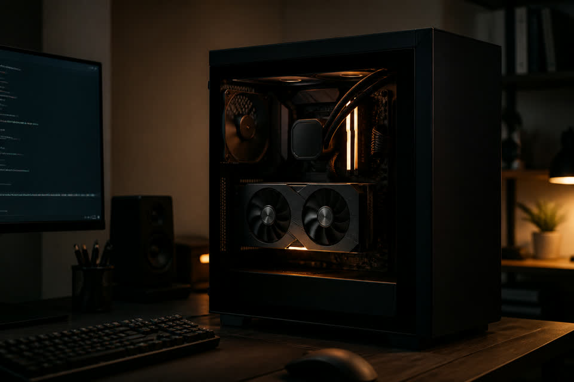
The 5 Business Triggers: When Is It Time to Invest?Los 5 gatilladores financieros: ¿Cuándo vale la pena invertir?
A hardware upgrade is never justified by novelty; it is strictly triggered when capacity unlocks immediate commercial revenue or prevents contractual risk.La empresa no invierte por novedad tecnológica; invierte cuando la nueva capacidad genera ingresos, reduce costos o abre contratos inmediatos.
The True Goal: Robust 24/7 Technological OperationsEl verdadero objetivo: Una operación tecnológica 24/7
Raw computational power loses its value if a single power outage, thermal drop, or network failure knocks services offline. Continuity is the foundation of enterprise trust.La potencia pierde su valor si un corte eléctrico, recalentamiento o caída de red deja los servicios fuera de línea. La continuidad es el activo real.
3-Layer Investment Architecture & Decision MatrixModelo de inversión en 3 capas & Matriz de decisión
A clear structural checklist to evaluate any technological acquisition before allocating company capital.Checklist estructurado para evaluar con rigor cualquier adquisición tecnológica antes de comprometer capital.
Strategic Growth Roadmap: Building an Enterprise AssetHoja de ruta estratégica: Construyendo un activo empresarial
Our goal is not to accumulate hardware; it is to forge a scalable technological asset that accelerates talent, captures revenue, and operates continuously.El objetivo no es acumular computadores, sino forjar una capacidad tecnológica que potencie al talento, genere ingresos y opere 24/7.
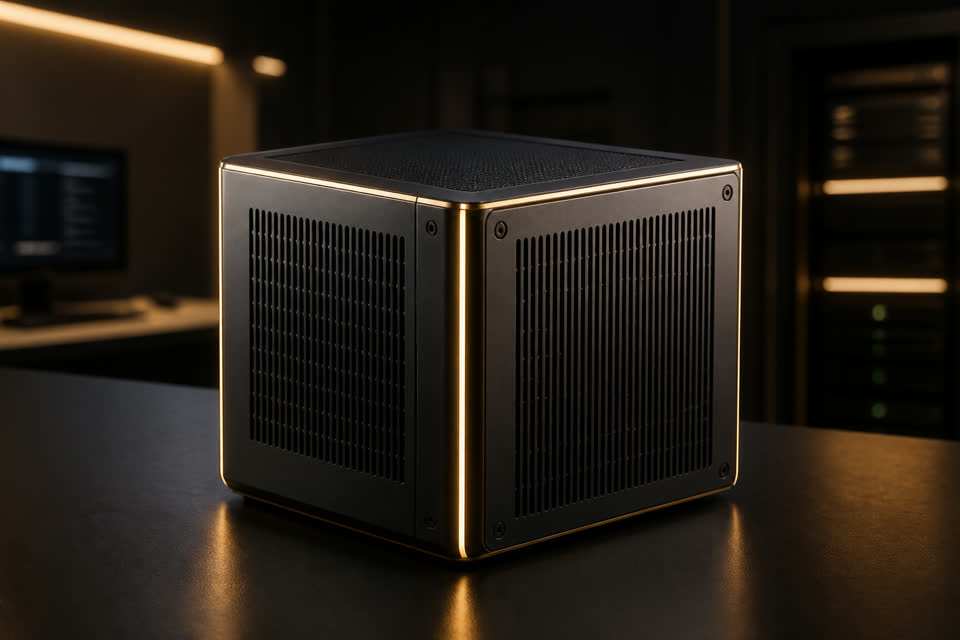
Arcana: Accounting You Cannot Fake Arcana: Contabilidad que no se puede mentir
For restaurant owners and operators who want to prove what was purchased, cooked, and sold without living on top of the store. Para dueños y operadores gastronómicos que quieren demostrar lo comprado, cocinado y vendido sin vivir encima del local.
Money Leaks Out in Small Drops: The Real LossEl dinero se escapa por goteo: La anatomía de la fuga
With typical industry net margins of only 3–9%, a 4% loss on sales wipes out 50% to 100% of the entire annual profit.Con un margen neto sectorial de solo 3–9%, una fuga del 4% sobre ventas destruye entre el 50% y el 100% de la utilidad anual.
| Store Size ProfilePerfil del Restaurante | Annual Gross SalesVentas Anuales | Annual Loss (4% Base)Pérdida Anual (4% Base) | Recuperación (50% Recorte)Recuperación (50% Recorte) |
|---|---|---|---|
| Small / Coffee / Fast-CasualPequeño / Cafetería / QSR | $500,000 USD | -$20,000 USD/año | +$10,000 USD/año |
| Mid-Sized / Full-ServiceMediano / Servicio Completo | $1,200,000 USD | -$48,000 USD/año | +$24,000 USD/año |
| Large / High-Volume FranchiseGrande / Alto Volumen / Franquicia | $3,000,000 USD | -$120,000 USD/año | +$60,000 USD/año |
Where Store Truth Breaks Down: The F.A.C.E.S. VectorsDónde se rompe la verdad del local: Los vectores F.A.C.E.S.
POS logs issued tickets; Arcana reconciles tickets against the 5 physical vectors where restaurant profit evaporates.El POS registra tickets emitidos; Arcana audita los 5 vectores críticos donde la utilidad se evapora.
Machines Sign What They Witnessed in Real TimeLas máquinas firman lo que vieron en tiempo real
Low-cost IoT microcontrollers (ESP32) connect the fridge, scales, kitchen ovens, and cash drawers to forge an immutable daily ledger.Microcontroladores IoT (ESP32) conectan neveras, básculas, hornos y POS en una red de auditoría criptográfica local.

Arcana Reinforces What the Industry RecommendsArcana refuerza las 4 estrategias anti-robo de Loomis
It does not replace culture or smart safes: it enforces physical truth where POS and spreadsheets fail.No sustituye la cultura ni las smart safes: refuerza donde el POS y el Excel tradicional se quedan cortos.

From Gut Intuition to Cryptographic TelemetryDe la intuición al dato criptográfico: Niveles de madurez
How restaurant EBITDA margins and investor transparency scale as operational maturity advances.Cómo evoluciona la rentabilidad y el control de un restaurante al adoptar tecnología verificable.
| Maturity LevelNivel de Madurez | Without Arcana (Traditional)Operación Tradicional | With Arcana ArchitectureCon Arquitectura Arcana |
|---|---|---|
| Levels 1–2 (Reactive)Nivel 1–2 (Reactivo) | ✕ 8–10% waste, invisible theft, paper logsMerma 8–10%, robo invisible, papel | ✓ Document SOPs + calibrate initial IoT baselinesDocumentar SOPs + calibrar sensores base |
| Levels 3–4 (Standardized)Nivel 3–4 (Estandarizado) | ✕ Manual weekly blind counts, delayed P&LConteo manual semanal, P&L tardío | ✓ Continuous theoretical vs. real variance trackingMonitoreo continuo Teórico vs. Real (<2%) |
| Levels 5–6 (Systematized)Nivel 5–6 (Sistematizado) | ✕ Disputes between remote partners & managersDisputas entre socios e inconsistencias | ✓ Multi-sensor correlation + sealed Polygon closeCorrelación multi-sensor + cierre sellado |

Closing Physical Leaks and Securing Digital IntegrityCierre de fugas técnicas y ciberseguridad digital
Protecting both the physical store operations and the high-cost digital vectors highlighted by the National Restaurant Association.Protección integral contra las fugas operativas internas y los costosos riesgos digitales del sector gastronómico.

What Arcana Delivers vs. What It Does Not PromiseQué sí hace Arcana y qué no promete
Commercial and investor trust expands when technological guarantees are rigorously delimited.La confianza comercial y de inversión se construye sobre compromisos técnicos delimitados y verificables.
- ✓ Correlated & signed physical hardware trailRastro correlacionado y firmado por sensores IoT
- ✓ Immutable daily close notarized on PolygonCierre diario sellado e inalterable en Polygon
- ✓ Visible, logged, and bounded manager overridesOverrides visibles, registrados y con límite pactado
- ✓ Zero dependence on editable Excel spreadsheetsCero dependencia de hojas de cálculo editables
- — "Impossible to hack" magical hype"Hackeo imposible" absoluto ni magia
- — Replacing PCI/NIST cybersecurity policiesSustituir normativas PCI/NIST o HACCP
- — Eliminating human leadership and supervisionEliminar la gestión humana y liderazgo
- — Locking store down if internet fails (operates offline)Bloqueo ante fallas de red (opera offline)
Which Restaurant Owner Benefits First?Checklist de decisión: ¿Arcana es para mi restaurante?
If you check 3 or more boxes, Arcana transforms from "cool technology" into mandatory financial control.Si marcas 3 o más casillas, Arcana se convierte en un multiplicador financiero directo.
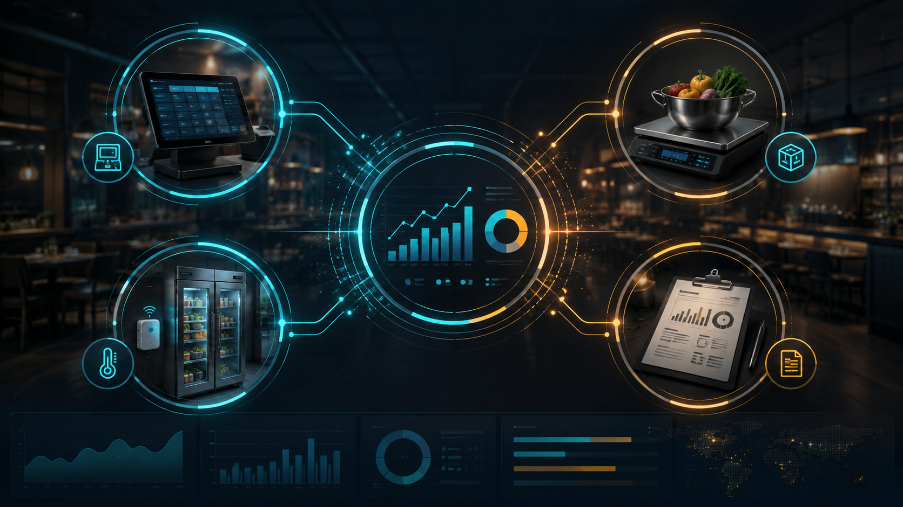
From Diagnostic Audit to Measurable PilotDe la auditoría inicial al piloto con retorno medible
Arcana deploys as friction-free operational control, validating EBITDA recovery before multi-unit scaling.Arcana se implementa como control operativo auditable, no como una promesa tecnológica abstracta.